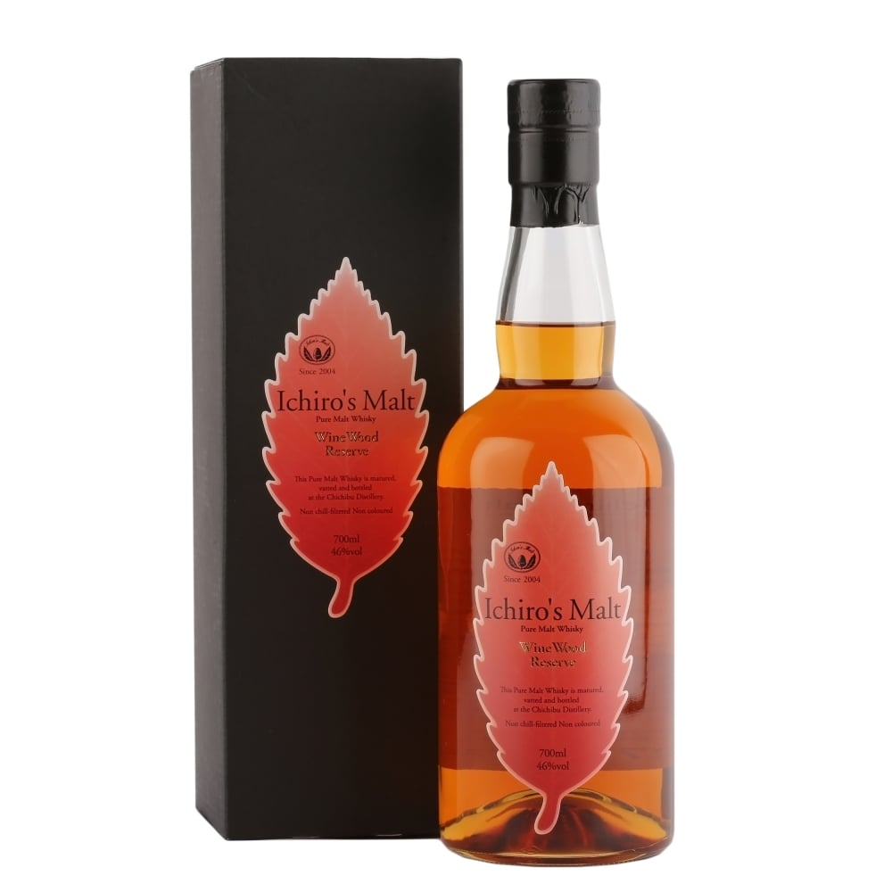
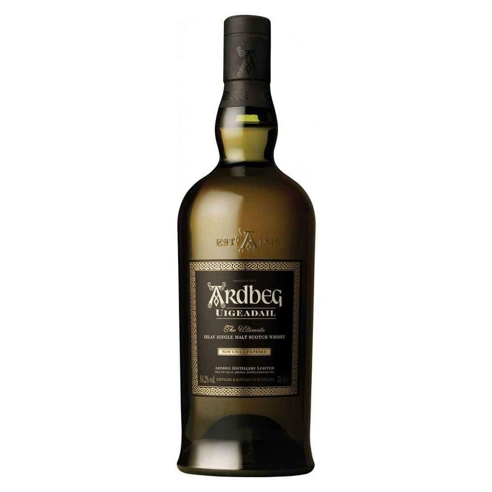
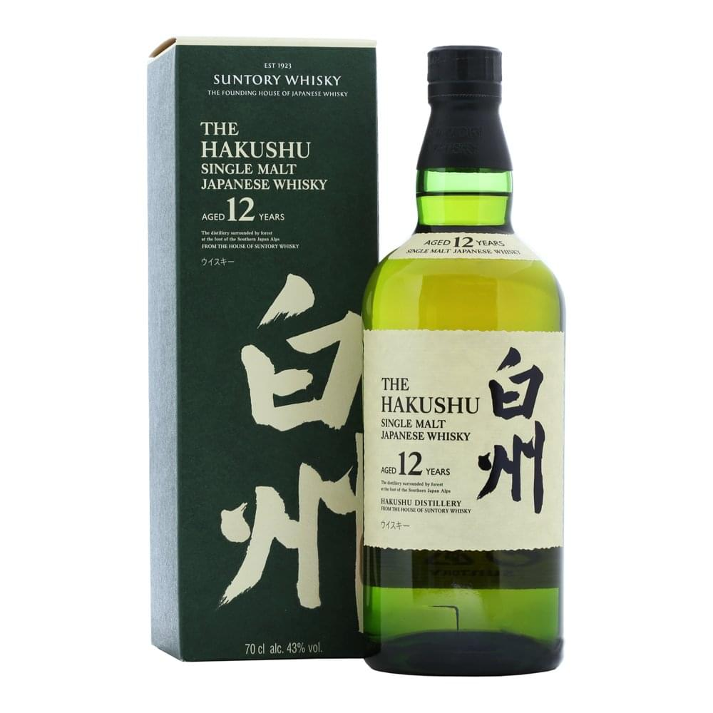

|  | Ichiro's Malt Wine Wood Reserve includes malt distilled at the now-closed Hanyu distillery. This was matured – including a finishing period in French oak ex-wine casks – vatted and bottled at Chichibu. |
|  | Ardbeg Uigeadail is th fine marriage of Ardbeg from bourbon barrels and sherry butts which gives a sweet and smoky finish to this malt. Uigeadail is the loch from which all Ardbeg water flows. An absolutely stunning whisky, and following the demise of Airigh nam Beist, this probably represents the best value in the core range. |
|  | The Hakushu 12 yrs is a green and crunchy entry in the Hakushu Range, combining whisky of a wide variety of ages, from across the range of casks used by the distillery to create a gently smoky dram, packed with fruity flavour. |